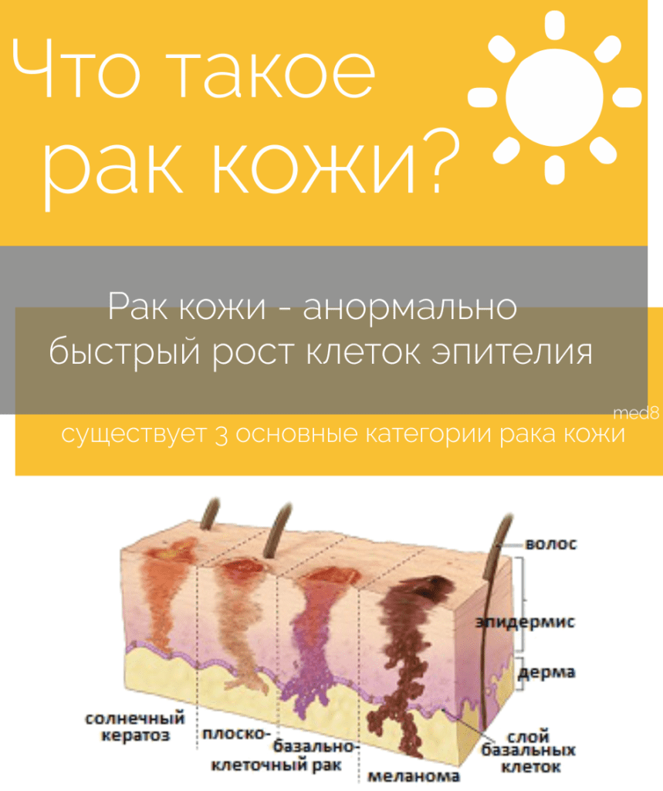
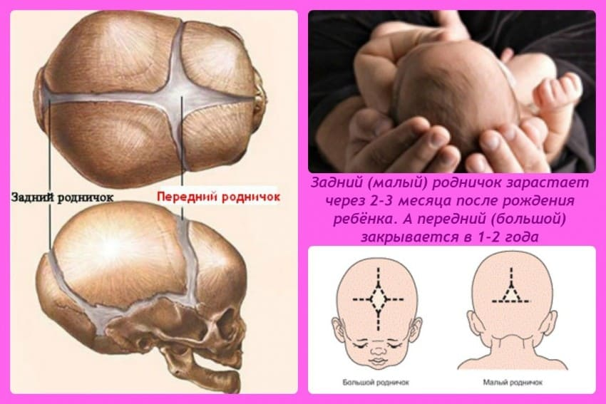

В последние год-два на педиатрических конференциях регулярно говорят о том, что готовятся к выходу Национальные клинические рекомендации по профилактике дефицита витамина D у детей. Исследование «Родничок», завершившееся еще в октябре 2015 года, показало почти тотальный дефицит витамина D у российских детей, поэтому проблема весьма актуальна. Некоторое время назад был опубликован проект этих самых нацрекомендаций, но утвержденного документа так пока и нет.
Между тем необходимость единого координирующего документа назрела давно. Сейчас педиатры назначают витамин D как бог на душу положит:
✗ одни не назначают его вообще, другие назначают в лечебных дозах без показаний;
✗ одни назначают его только детям на грудном вскармливании (считают, что в смесях его достаточно), другие всем подряд;
✗ одни назначают круглый год, другие считают, что летом достаточно «кожного» витамина, который вырабатывается под действием солнечных лучей;
✗ одни начинают давать с роддома, другие с 2–3 месяцев жизни;
✗ одни рекомендуют давать до 1 года, другие до школы, третьи говорят, что нужен пожизненный прием, и т. д. Каждый основывается на личном опыте, на разрозненных научных публикациях, на советах медпредставителей и прочих ненадежных источниках информации.
Обогащение продуктов питания витамином D для тотальной профилактики, которое давно проводится в развитых странах (в основном добавляют витамин D во все магазинное молоко, из расчета 400 МЕ на 1 литр), в России пока, видимо, не предвидится.
Одним словом, с профилактикой все грустно: кто в лес, кто по дрова.
Но и с диагностикой и лечением рахита не лучше. Ряд педиатров, неврологов и других врачей пытается ставить диагноз только на косвенных ненадежных признаках, типа лысинки на затылке или отрицательной пробе мочи по Сулковичу.
Почти никто не смотрит уровень кальция, фосфора, щелочной фосфатазы в сыворотке крови и уровень 25-ОН витамина D. Совсем уж никто, кажется, не назначает рентгенограммы при рахите, которые вообще-то являются обязательным компонентом диагностики. Лечебные дозы назначаются на глазок. Про штосс-терапию (назначение высоких, по 150 000–600 000 ME, доз витамина D раз в три месяца) почти никто из педиатров не знает. И т. д., и т. д. Вот сколько проблем может решить публикация клинических рекомендаций по витамину D. В 2015 году были опубликованы такие рекомендации для терапевтов, очень ждем теперь педиатрические.
Я нисколько не могу претендовать на роль эксперта в этом вопросе, но, как практикующий педиатр, не могу не иметь своего мнения по нему; я назначаю своим пациентам на грудном вскармливании витамин D с самого роддома по 1 капле (500 МЕ) до 6 месяцев, затем по 2–3 капли ежедневно до 3–7 лет, вне зависимости от времени года. Поскольку литр адаптированной смеси содержит 400 МЕ витамина D (около 1 капли Аквадетрима), детям на искусственном вскармливании, потребляющим около 1 литра смеси в сутки, я назначаю, соответственно, на 1 каплю препарата меньше.
А пока основные моменты можно прочесть в документе Global Consensus Recommendations on Prevention and Management of Nutritional Rickets 2016. Он, правда, доступен только на английском и юридической силы в РФ не имеет, но зато очень современный и строго соответствует критериям доказательной медицины.
P. S. Любителям заменять введение препаратов витамина D ультрафиолетом (типа зачем нам «химия», когда есть «натуральный» путь профилактики) посвящается эта цитата из Глобального Консенсуса:
Не существует безопасного для населения порога УФ-облучения, позволяющего вырабатывать достаточное количество витамина D, не увеличивая при этом риск развития рака кожи.

Р. Р. S. Нет никакой взаимосвязи между приемом витамина D и скоростью закрытия родничка у младенцев. Нормы закрытия родничка – от 3 месяцев до полутора лет. Если родничок закрывается раньше 3–6 месяцев, то мы начинаем волноваться, нет ли здесь краниостеноза, и пристально за этим следить.

Но риск краниостеноза тем более не зависит от приема витамина D. Поэтому если доктор говорит, что ребенку нельзя пить витамин D, поскольку у него слишком рано закрывается родничок, или ставит диагноз рахита только на основании крупных размеров родничка, то стоит получить мнение другого специалиста по этому вопросу.
(Сергей Бутрий "Здоровье ребенка: современный подход")